Java
Output in Java
In Java, output is the term used to describe the data that your application shows to the user,
either on the console or via other interfaces such as graphical programs. When a program is being
executed, output is essential for conveying the knowledge or the outcomes of calculations. Together
with some examples, let's examine how to generate output in Java.
There are 2 types of output in Java.
System.out:
It is possible to write characters to the PrintStream System.out. The console receives the
data that is written to System.out. In order to show the user the outcome of their operation,
console-only programs such as command line tools frequently use System.out. While it might not be
the ideal method to extract debug information from a program, this is also frequently used to
print debug statements from programs. It is possible to write characters to the PrintStream
System.out. The console receives the data that is written to System.out.
Types of printing statements:
Conditional Statements in Java
To make decisions in a program based on certain conditions, programmers in Java use conditional
statements. Else, if, and else are the primary limitations. If a given condition is true or
false, these statements enable the program to run distinct lines of code based on the
situation. In order to build logic that can react dynamically to data or input, developers need to
be able to control the flow of their programs. This helps to further increase the program's
flexibility and power.
There are 4 types of Java conditional statements. All of these are widely used according to their
syntaxes and use cases.
If statement:
Assume that if a statement is used to execute the program, then a condition is true. An
alternative name for it is a one-way selection statement. An argument is passed and the
corresponding code is executed if the condition is met, if not, nothing happens.
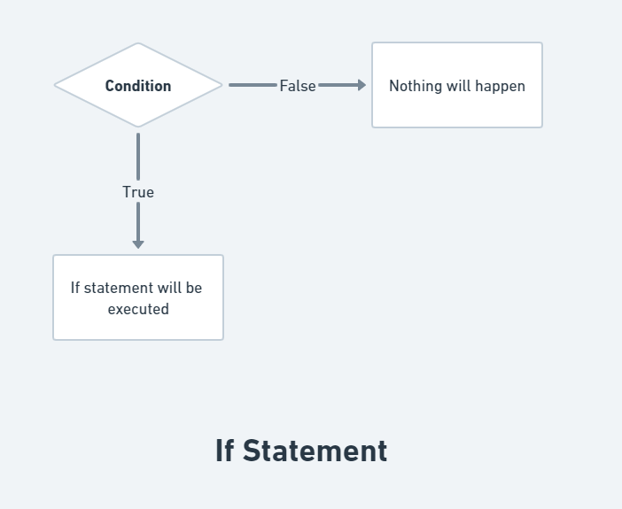
Syntax:
if (expression) {
// You can enter the code here
}
Examples:
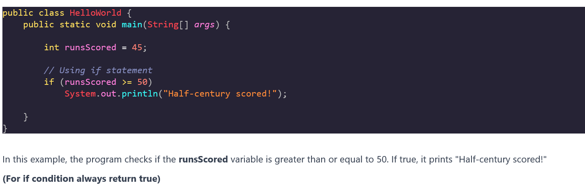
If Else statement:
An if-else statement is a control structure that determines which statements to choose based on a
set of conditions.
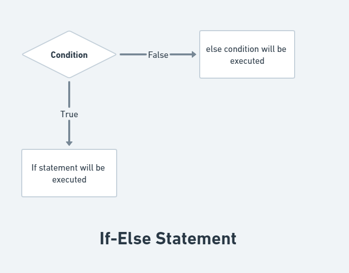
Syntax:
if (condition) {
// Statements that will be carried out if the condition is satisfied
} else {
// Statements that will be carried out if the condition is not met
}
Examples:
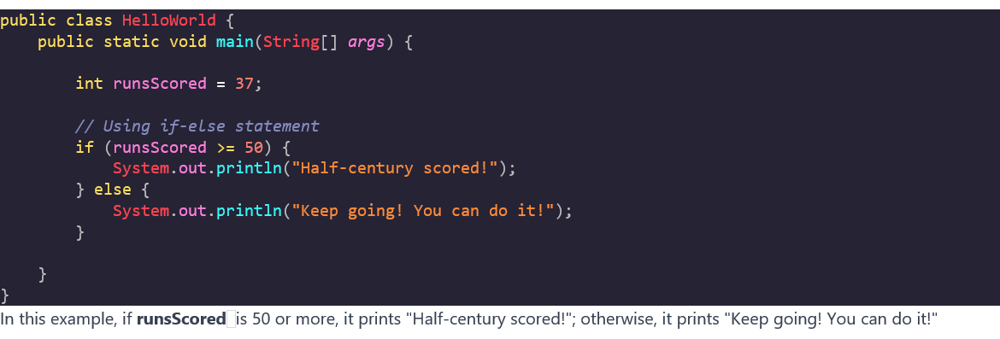
Else If statement:
An if-else-if ladder in Java can execute one code block while multiple other blocks are executed.
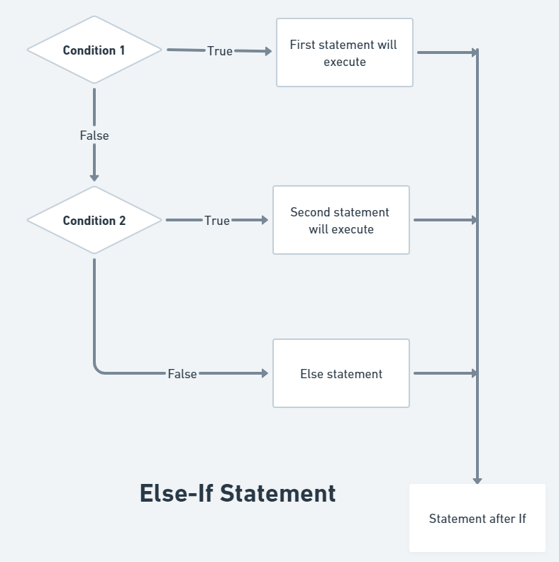
Syntax:
if (condition1) {
// Executable code if condition1 is true,
} else if (condition2) {
// Executable code if condition2 is true
}
...
else {
// Executable code if all the conditions are false
}
Examples:
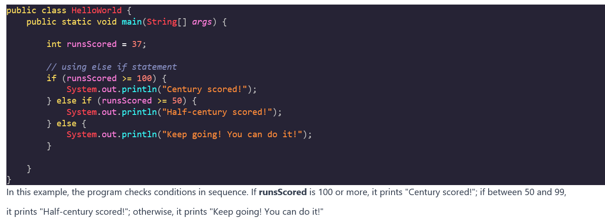
Switch Case statement:
The switch statement can be executed in multiple ways, unlike the if-else statement.
Furthermore, by concentrating its evaluation on a small number of primitive or class types, it
compares the value of the expression to its cases.
Syntax:
switch (Expression) {
case value 1:
// Statement 1;
case value 2:
// Statement 2;
case value 3:
// Statement 3;
case value n:
// Statement n;
Default:
// default statement;
}
Examples:
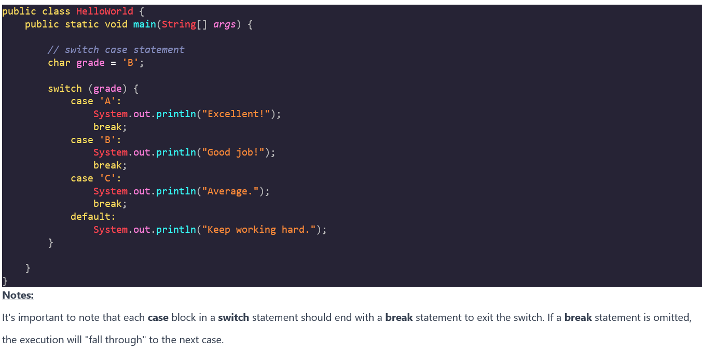
Ternary Operator in Java
This is a short form of if-else.
A simple syntax for figuring out whether a condition is true or false in Java is provided by the
ternary operator. Based on the result of the Boolean test, it returns a value.
To write more compact code, one can use ternary operators in place of if-else statements in Java.
Professional programmers appreciate how the Java ternary operator makes their code more
understandable and straightforward.
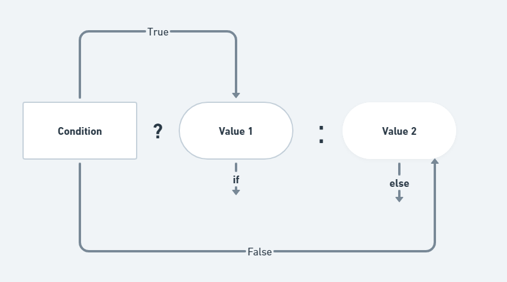
Syntax:
variable = (condition) ? (return if true) : (return if false);
Examples:
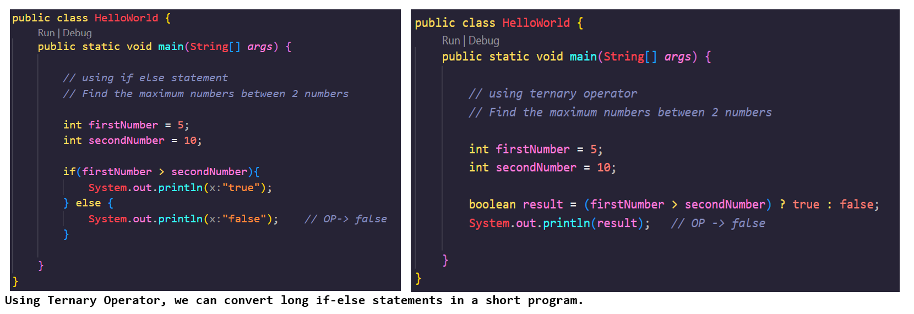
Loops in Java
A loop is a control flow structure in programming that permits the repetition of a specific
code block several times. By automating repetitive activities, loops allow code to be
executed more concisely and efficiently while carrying out the same set of instructions without
repeating itself. They make it possible for programmers to create programs that can deal with
scenarios in which an iterative process must be carried out.
(Loops can execute a block of code as long as a specified condition is reached. It saves time,
reduce errors, and code is more readable.)
There are several types of loops, and the choice of which one to use depends on the specific
requirements of the task. The primary types of loops are:
for loop:
A Java control flow statement called a for loop enables you to run a code block a
predetermined number of times repeatedly. It is especially helpful if you know ahead of
time how many iterations there will be. The three components of the for loop's syntax are the
update statement, the condition, and the initialization.
Syntax:
for(initialization; Boolean_expression; update) {
// Statements
}
Diagram:
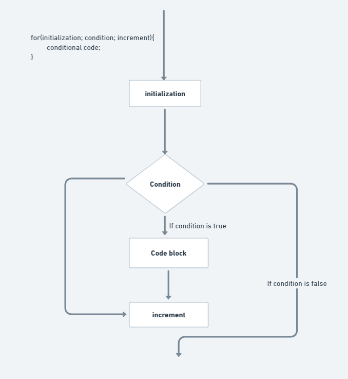
Here is the flow of control in a for loop −
Examples: Calculating the Sum of Numbers
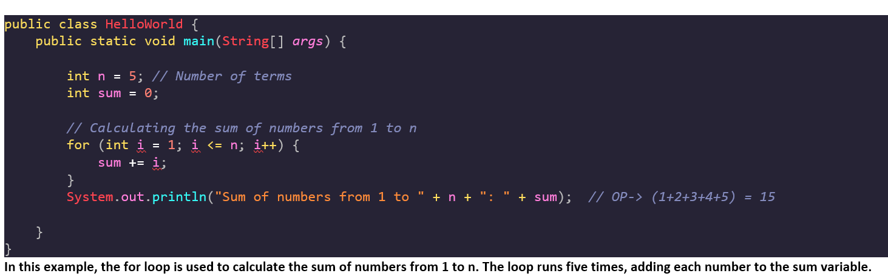
We can utilize the for loop if the value is fixed for iteration.
while loop:
Java's while loop is a control flow statement that lets you run a code block continuously as long as
a certain condition is met. It is especially helpful in situations where the loop is conditional
and the number of iterations is unknown in advance.
Syntax:
while(Boolean_expression) {
// Statements
}
Diagram:
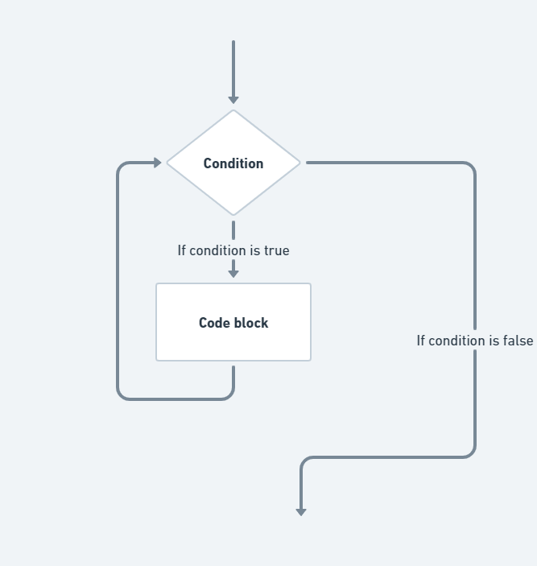
Here is the flow of control in a while loop −
Examples: Calculating Factorial
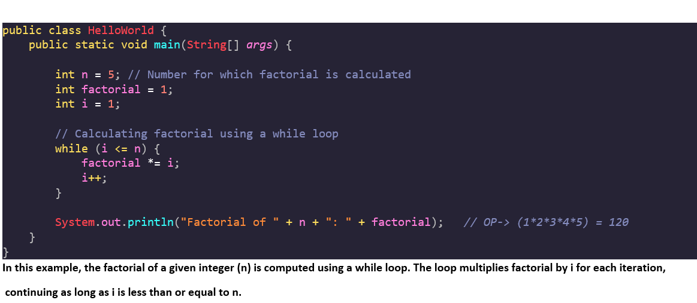
The while loop should be used if the condition is boolean or the iteration is not fixed.
do-while loop:
A Java control flow statement called a "while loop" lets you run a code block repeatedly as long as
a particular condition holds true. While it is comparable to the while loop, it ensures that the
loop's code block is run at least once before the condition is checked. Because of this, it's
helpful when you want to make sure a specific piece of code runs before the loop termination
condition is verified..
The while loop operates at least once.
Syntax:
do {
// Code to be executed at least once
} while (condition);
Diagram:
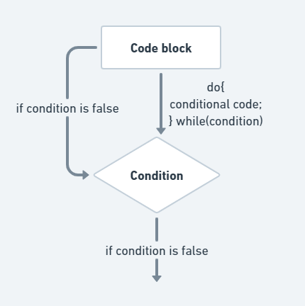
Here is the flow of control in a do-while loop −
Examples: User Input Validation
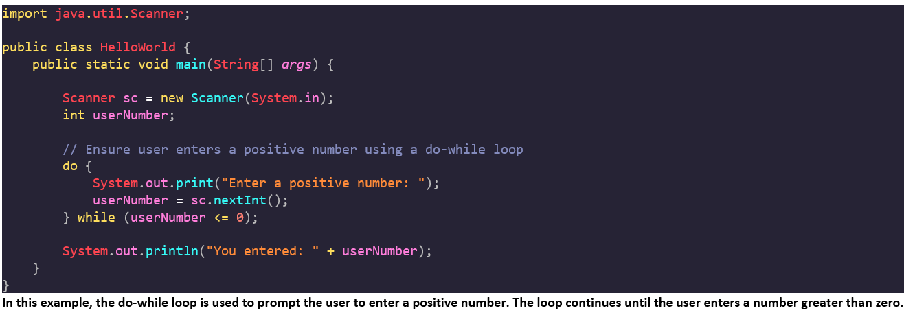
The Difference Between For Loop - While Loop - Do-While Loop:
Difference |
For Loop |
While Loop |
Do-While Loop |
|
Introduction |
For loop in Java iterates a given set of statements multiple times. |
The Java while loop executes a set of instructions until a boolean condition is met. |
The do-while loop executes a set of statements at least once, even if the condition is not met. After the first execution, it repeats the iteration until the boolean condition is met. |
|
Best time to use |
Use it when you know the exact number of times to execute the part of the program. |
Use it when you don’t know how many times you want the iteration to repeat. |
Use it when you don’t know how many times you want the iteration to repeat, but it should execute at least one time. |
|
Syntax |
for(init; condition; icr/dcr){ //statements to be repeated } |
while(condition){ //statements to be repeated } |
do{ //statements to be repeated }while(condition); |
|
Example |
for(int x=0; x<=5; x++){ System.out.println(x); } |
int x=0; while(x<=5){ System.out.println(x); x++; } |
int x=0; do{ System.out.println(x); x++; }while(x<=5); |
for-each loop:
A for each loop is a unique repetition control structure that allows you to design a loop that must
be repeated a certain number of times in an efficient manner.
Even if you don't know how many times a task will be repeated, a for each loop is useful.
Syntax:
for(declaration : expression) {
// Statements
}
Here is the flow of control in a for-each loop −
Examples: Print the numbers from 1 to 10 using for-each loop
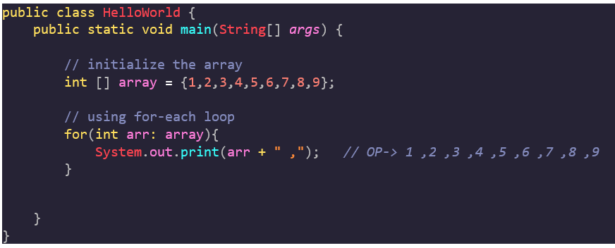
An infinite loop is one that runs its code indefinitely without pausing. This can happen if the loop's termination condition is not properly defined or if the condition always evaluates to true. Infinite loops are usually unintended and might cause a software to become unresponsive.